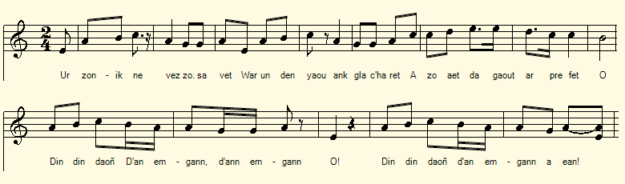
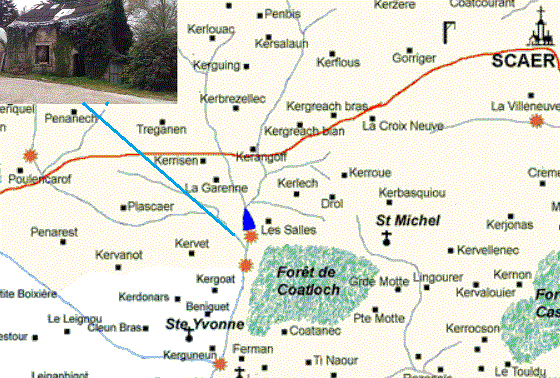
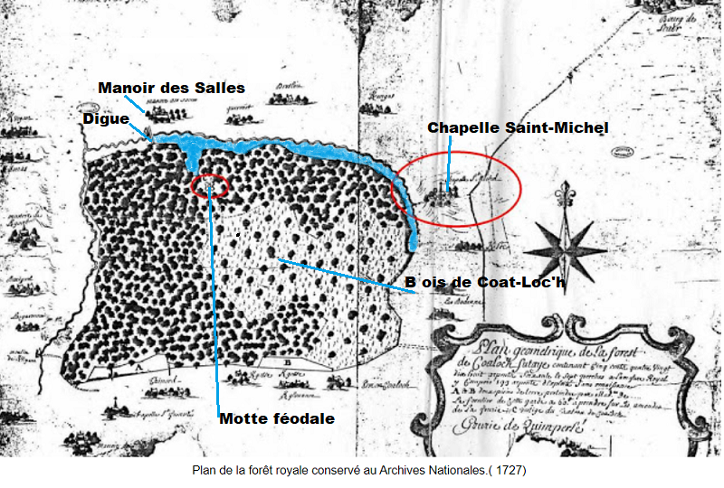
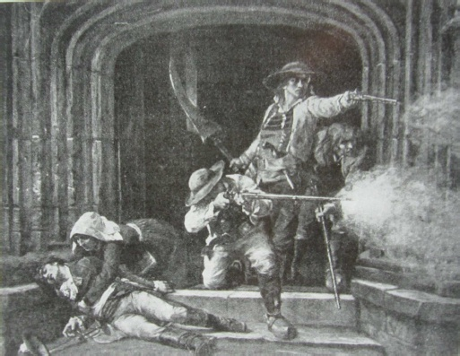

|
A propos de la mélodie Des informations concernant cette mélodie sont données à la page Le Cygne. A propos du texte Noté uniquement par La Villemarqué, dans le carnet N°2, pp. 57 & 58. C'est la seule fois que la chanteuse Mariana est mentionnée. |
About the tune Information about this melody is given on the Swan page. About the lyrics Noted only by La Villemarqué, in notebook N ° 2, pp. 57 & 58. The singer Mariana is mentioned nowhere else. |
|
BREZHONEG (Stumm KLT) P. 57/29 "Le Chouan", chanté par Mariana 1. Ur zonik nevez zo savet War un den yaouank glacharet. A zo aet da gaout ar prefet. 2. Da gaout ar Prefet da Gemper. Biken james na zeuy dar ger. 3. Mevelien 'r Zalv biskoazh neus manket, Da "charreat koad" dar jandarmed. E bourch Skaer pa [i] ne reket ket. 4. - Archerien Skaer, din leveret O klask ar Chouaned eo och bet? 5. Mar-d'och bet o klask ur Chouan [E] Meilh-ar-Zalv ' kafech unan. [3] A larer anezhañ Yannik Leuchan. - 6. 'Ma o kuitaat Meilh-ar-Zalv, Leun e zaoulagad a zaeloù. [4] Din din daon Dan emgan, dan emgann. Oh! Din din daon, dan emgann a ean [5] 7. - Mevel Meilh- ar-Zalv, din lev'ret Pe sort a "mode" emaint amañ? Penaos [eo] an dud-se gwisket? 8. - Div chotigoù ruz ha blev melen Daoulagad glaz à zo ne benn. Page 58/30 9. Ur botoù-ler, ul leroù gwenn Ur boudreoù gloan, bragoù lien. 10. Ur jupenn glaz, ur jupenn wenn A-hed e chostez ur sabrenn. [6] 11. A-hed e chostez ur sabrenn. War e skoaz r fuzuilh a zaou denn. 12. Ha pemp kartouchenn war-nugent Diwallit outañ, archerien! - Eñ a daol (boled) plom en ho kerchenn! 13. Oa ket ar ger peurlavaret, Yannik Leuchan oa erruet. An archerien a zo pilet... [7] Transcrit KLT par Christian Souchon |
FRANCAIS Page 57/29 "Le Chouan", chanté par Mariana 1. Un chant nouveau fut composé Sur un jeune mal-inspiré [désespéré] Qui sen fut trouver le préfet, 2. Le préfet de Quimper. Depuis, Il nest jamais rentré chez lui. [1] 3. Jamais à Salv il ne manqua D'aides pour "charroyer le bois" Aux sbires qui n'en cherchaient pas. [2] 4. - Gendarmes de Scaër, dites-moi, Vous cherchez des Chouans, nest-ce pas? 5. Si donc vous cherchez un Chouan, A Meil-ar-Zal il vous attend. [3] On lappelle « Jean de Leuhan». - 6. Quand il quitta Meil-ar-Zalo Ses larmes coulèrent à flots [4] Din, ding, don Au combat, au combat, oh! Din, ding, don, au combat nous allons! [5] 7. - Valet de Zalo, dites-moi, Quel habit porte-t-il là-bas? Comment sont vêtus ces gens-là? 8. - Favoris roux et cheveux blonds Yeux bleus dans un visage [rond]. Page 58/30 9. Il a des souliers, des bas blancs Ceint [baudrier] de laine ; pantalons longs [de toile] 10. Bleu ou bien blanc est son gilet. Un sabre pend à son côté. [6] 11. Un sabre [mais ce nest pas tout] Il porte un fusil à deux coups. 12. Vingt-cinq cartouches, [ma-t-on dit]. Gendarmes, méfiez-vous de lui! Ses plombs sont si vite partis ! 13. Tout cela fut du temps perdu Yannick Leuhan est apparu: Les gendarmes sont abattus. [7] Traduction Christian Souchon (c) 2019 |
ENGLISH Page 57/29 "The Chouan", sung by Mariana 1. Come near! To a new song listen On an ill-inspired lad written Who committed denunciation. 2. To the Quimper prefect. Since then He never went back home again. [1] 3. At Salv, the gendarmes of Scaër Never wanted ready helpers And unasked for "wood haulers". [2] 4. - Gendarmes of Scaër, if you knew How I am ready to help you! 5. If you are looking for a Chouan, At Meilh-ar-Zalo I know one. [3] And his name is "John of Leuhan". - 6. When this lad left Meilh-ar-Zalo His tears flowed in deep sorrow ... [4] Din, Ding, Don To the fight, to the fight oh! Din, ding, don, to the fight we go! [5] 7. - Servant of Zalo, tell me, pray, How will he be clothed today? How do these people dress? Which way? 8. - His side whiskers, his hair are blond. He has blue eyes. His face is round. Page 58/30 9. Wears leather shoes and white stockings Belt of wool; long trousers, methinks. 10. The vest he wears is blue or white. And a saber hangs on his side. [6] 11. A saber, and, - still a trifle -, Always holds a two-shot rifle. 12. Twenty-five cartridges to boot Hanging on the belt of his suit:! His pellets are ready to shoot! - 13. But every warning was in vain. Yannic Leuhan could not refrain From coming. The gendarmes were slain. [7] Translation Christian Souchon (c) 2019 |
|
[1] Une interprétation possible: Le jeune homme "chagriné" (glac'haret) qui se rendit à la préfecture de Quimper pour n'en jamais revenir (str. 1 et 2) est le valet du Moulin Meil-ar-Zalo qui dénonça le Chouan Yannick Leuhan aux gendarmes de Scaër dont il est question dans la suite du poème. On peut supposer qu'il était parti toucher le salaire de Judas qui lui était dû et qu'il tomba dans une embuscade sur le chemin du retour (33 km entre Quimper et Scaër). Cela rappelle le chant Les gendarmes de Châteauneuf, strophe 20, où une somme allouée par les autorités locales disparaît de la même façon. De telles délations sont évoquées dans le compte-rendu du gendarme Dupré et dans le rapport du général La Bruyère au général Michaud cités sur la page Les habits de Chouans (événements de novembre 1798, dans le secteur Leuhan-Roudouallec). [2] Les valets pour charroyer le bois: Cette périphrase vise de toute évidence les délateurs, nombreux à Scaër. Cette ville était cependant largement gagnée à la cause chouanne: ses habitants refusaient de payer les contributions et de fournir des "volontaires" aux armées, ce qui déclencha une véritable insurrection le 27 août 1792. D'autre part, cette expression fait allusion aux activités de Scaër liées au bois jusque dans les premières décennies du XXème siècle: charbonniers et sabotiers de la forêt de Coatloc'h.. [3] Meilh-ar -Zalv: Prononcé et écrit dans le manuscrit tantôt "Zalw" (str. 3), tantôt "Meil ar Zalo" (str. 6 et 7). Il n'est pas aisé d'identifier le Chouan "Yannig Leuc'han", "Jean de Leuhan" et son délateur, ni de dater cette tentative de capture malheureuse.  En revanche, il semble que l'on puisse localiser précisément le moulin "Meilh ar Zalv" dont parle la gwerz.On rencontre de nombreux noms de moulins, dont certains existent encore, dans le secteur Scaër - Leuhan. Le seul dont le nom se rapproche de façon convaincante du vocable entendu par La Villemarqué est le "Moulin des Salles" en Scaër, sur la rivière Ster-Goz, en bordure de la forêt de Coat-Loc'h. Il cessa son activité entre 1945 et 1965, mais la roue en a été remise à neuf après 1979. Son nom breton corrigé était sans doute "Meilh ar Zalioù". Les renseignements ci-après fournis par le blog https://scaerunelonguehistoire.blogspot.com/2020/05/les-cinq-moulins-du-ster-goz.html font ressortir l'intérêt stratégique de ce moulin et de l'ancien manoir dont il dépendait, à la lisière de la forêt de Coat-Loc'h, dont le rôle de forteresse naturelle est très ancien. - Les "Terriers de Concarneau-Fouesnant-Rosporden" de 1680 précisent que le pouvoir royal avait cédé en 1656, une grande étendue de terres aux seigneurs des Salles, Jean de Lagadec et Françoise du Landrein son épouse. Ils désignent déjà l'ancien lac comme "l'étang qui était autrefois". Le manoir et le lieu noble des Salles, iront ensuite (1690) à Joseph de Kermeno, prêtre, puis à Anne Le Lagadec, veuve Euzenou (1717), enfin au comte Jean Euzenou, chevalier, vicomte de Kervégant (1773). - Si le lac de Coat-Loc'h a disparu depuis de siècles, la digue de terre des Salles est encore la preuve visible de son existence. Sur le "Plan géométrique de la forêt de Coaloch" daté du 17ème siècle et conservé aux archives nationales, le lac n'existe plus, mais la digue est mentionnée face au manoir des Salles, édifice seigneurial qui a succédé à une motte féodale qui s'élevait dans la forêt. Le lac, selon les anciens, devait longer le versant nord de la forêt jusqu'à la chapelle Saint-Michel. - La motte féodale était sans doute une place fortifiée de la guerre de Cent ans qui répondait à la place forte des Anglais de Rozos (Roc'h Saoz: le tertre des Anglais), un nom local qui avec d'autres, Stank an Askern (Etang des Ossements), Sentinalloù (les Sentinelles), Bered Saoznek (Cimetière anglais) témoigne du passé guerrier de ce site. - La forêt de Coat-loc'h était plus étendue autrefois et entourée d'un Grand mur (Mur vraz) de 12 km sans doute construit avant 1341, début de la guerre de succession du duché de Bretagne. Ce serait l'oeuvre de Jean le Bâtard, un des prétendants à la succession qui aurait cherché à obstruer les communications avec Scaër. Ce lieu si particulier avait donc vocation à devenir un repaire de Chouans! [4] Ses larmes coulaient à flots: Plus que le résultat de la "tempête sous un crâne" qui tourmente le délateur, ces flots de larmes sont un des clichés qu'affectionnent les gwerzioù, pour souligner le caractère dramatique d'une scène. [5] Din din daon...: Ce refrain (qu'i n'apparaît sur le manuscrit qu'à la 6ème strophe), accompagne précisément le chant "Le Cygne" (cf. note 4). On peut voir dans cette volée de cloches qui accompagne une marche militaire, un symbole de l'engagement chouan en faveur de l'église romaine. [6] Comment sont vêtus ces gens-là?: Cette description du costume chouan diffère sensiblement de celles données dans le chant Habit de Chouan (après str. 27) et dans Citoyen Soufflet (note 8, témoignage de la veuve). Toutefois, la veste courte (chupenn), le pantalon long, la ceinture utilisée comme cartouchière, y figurent toujours en bonne place. On peut être étonné par le nombre de cartouches en réserve (25)... Cela pourrait être un indice permettant de dater cette chanson. Le 4 Floréal an VI, soit le 23 avril 1798, De Bar avait réceptionné 1800 fusils débarqués par les Anglais dans la baie de La Forêt. Ce jeu de question et réponse relatives à l'habillement du personnage dont on veut s'emparer rappelle les strophes 17 à 22 de La mort de Pontcallec. [7] Les gendarmes sont abattus: Cette strophe composée de trois vers juxtaposés sans mots de liaison en guise d'abrupte conclusion aux 30 vers qui précèdent, n'est pas sans rappeler, toutes proportions gardées, le laconique "Le lendemain Aymeri prit la ville" du poème de Victor Hugo, "Aymerillot" ("La Légende des siècles"). |
[1] A possible interpretation: The "distressed" (glac'haret) young man who went to the prefecture of Quimper never to return (Str 1 and 2) is the manservant of Meil-ar-Zalo who denounced Chouan Yannick Leuhan to the gendarmes of Scaër, as stated in the following stanzas of the poem. It may be supposed that he had gone to receive the salary of Judas due to him and was ambushed on his way back (33 km between Quimper and Scaer). This is reminiscent of the song Gendarmes of Châteauneuf, stanza 20, where a sum allocated by the local authorities disappears in the same way. Such accusations are mentioned in the report by Gendarme Dupré and in the report by General La Bruyère to General Michaud cited on the page Chouan garment (events of November 1798, in the Leuhan-Roudouallec area). [2] Helpers for hauling wood : This circumlocution hints obviously at the sneaks and informers who abounded in Scaer. This city, however, was largely won over to the Chouan cause: its inhabitants refused to pay the new taxes and to provide "volunteers" to the armies, which triggered a real insurrection on August 27, 1792. On the other hand, this expression refers to Scaër's wood-related activities. Up to the first decades of the 20th century there were coalmen and cloggers in the Coatloc'h forest. [3] Meilh-ar-Zalv: Pronounced and written in the manuscript as "Zalw" (str. 3) and "Meil-ar-Zalo" (str.6 and 7), It is not easy to identify the Chouan "John of Leuhan" or the man who betrayed him, nor to date this unsuccessful capture attempt.  But apparently we may precisely pinpoint on the map the mill "Meilh ar Zalv" of the gwerz.There were many mills, some of which are still extant, in the Scaër - Leuhan area. But the only one whose name convincingly resembles the word recorded by La Villemarqué is the "Moulin des Salles" in Scaër, on the river Ster-Goz, on the edge of the forest of Coat-Loc ' h. It ceased its activity between 1945 and 1965, but the wheel was refurbished after 1979. Its correct Breton name should have been "Meilh ar Zalioù". The following information taken from the blog https://scaerunelonguehistoire.blogspot.com/2020/05/les-cinq-moulins-du-ster-goz.html highlights the 'strategic interest of this mill and the adjoining old manor house, on the northern edge of Coat-Loc'h wood, whose role as a natural stronghold is very old: < br> - The cadastral record "Terriers de Concarneau-Fouesnant-Rosporden" of 1680 specifies that the royal power had bestowed in 1656, a vast expanse of land on the Lords of Les Salles, Jean de Lagadec and Françoise du Landrein his wife. It already refers to the lake as "the pond that once was there". The manor and the "noble place" of Les Salles, was then passed on to the priest Joseph de Kermeno (1690), then to Anne Le Lagadec, widow of Euzenou (1717), finally to Count Jean Euzenou, a knight who also was viscount of Kervégant (1773). - If the Lake referred to in the name "Coat-Loc'h" disappeared centuries ago, the earthen dike of Les Salles is still a visible proof of its past existence. On the "Geometric Plan of the Coaloch Forest" dated from the 17th century and kept with the National Archives, the lake no longer exists, but the dike is mentioned opposite Les Salles manor, a stately building which succeeded a feudal motte which stood within the wood. The lake, according to the elders, stretched along the northern edge of the wood as far east as the Saint-Michel chapel. - The feudal motte was undoubtedly a fortified place of the Hundred Years War erected in response to the English stronghold Rozos (Roc'h Saoz: the "mound of the English"), a local name that along with "Stank an Askern" (Pond of Bones), "Sentinalloù" (Sentinels), "Bered Saoznek" (English cemetery) bear witness to the warlike past of this site. - The Coat-Loc'h forest was more extensive in the past and surrounded by a 12 km Big wall (Mur Vraz) probably built before the beginning of the war of succession to the Duchy of Brittany in 1341. It might be the work of Jean le Bâtard, one of the contenders for the succession who would have intended thus to obstruct communications with Scaër. No wonder if this very special place was to become a den for Chouan fighters! [4] His tears flowed: More than the result of the "storm under a skull" tormenting the informer, these streams of tears are one of the clichés favoured by the gwerzioù, to emphasize the dramatic nature of a scene. [5] Din din daon ...: This chorus (inserted, on the manuscript, after the 6th stanza), features in the song "The Swan" (see note 4). One can see in these pealing bells that accompanies a military march, a symbol of the Chouan commitment to the Roman Catholic Church. [6] How are these people dressed?: This description of the Chouan dress differs significantly from those given in the songs Habit de Chouan (after str. 27) and Citizen Soufflet (note 8, testimony of the widow). However, the short jacket (chupenn), the long pants, the belt used as a bandolier, still stand out prominent. We may wonder at the many cartridges kept in store (25) by this Chouan fighter ... This could be a clue to date this song. On April 4th 1798, (4 Floreal year VI), De Bar had received 1800 rifles landed by the English in La Forêt bay. The question and answer game related to the clothing of the wanted character is reminiscent of stanzas 17 to 22 in "The death of Pontcallec". [7] The gendarmes are shot down: This stanza made up of three verses in succession without connecting words, as an abrupt conclusion to the preceding 30 verses, reminds us somehow of the laconic sentence "The next day Aymeri took the city ??" which concludes Victor Hugo's poem,"Aymerillot" in the poetry collection "The Legend of the Centuries". |
